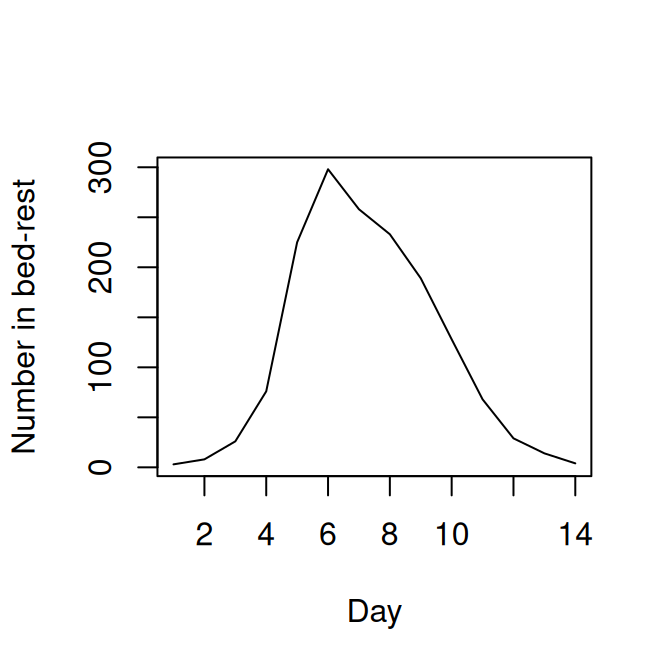

10 Particle MCMC
T. J. McKinley (t.mckinley@exeter.ac.uk)
Here we use a simple model to illustrate how we can use particle Markov chain Monte Carlo (PMCMC) routine (Andrieu, Doucet, and Holenstein 2010) with a bootstrap particle filter (Gordon, Salmond, and Smith 1993) as a way of fitting compartmental models to partially observed data, as described in the lectures.
Note that PMCMC is extremely computationally intensive, and the only real way to make it tractable for many problems is to code both the simulation code and the MCMC code in a low-level language such as C/C++. We could use e.g. the pomp package to fit this model using the same PMCMC routine described here, but the syntax is different to the SimInf style. So instead we will use the SimBIID package, which provides a function PMCMC() that runs this algorithm. You must pass a SimBIID_model object (see here) to this function, and then it will automatically compile in the correct manner.
Please note that an alternative frequentist approach, using maximum likelihood via iterated filtering (MIF) framework of Ionides, Bretó, and King (2006), and implemented in the pomp package, can be found here.
10.1 Case Study
To illustrate some of these ideas we will use a case study of influenza in a boarding school. These data are from a paper in the BMJ in 1978 (Anonymous 1978) and provided in the outbreaks R package. We use a simple \(SIRR_1\) model with two removal classes, \(R\) and \(R_1\). We will assume that the bed-rest counts in the data correspond to the number of individuals in the \(R\) class, and will ignore the other time-series for the time being. This has been used various times in the literature, including Murray (2003), de Vries et al. (2006) and in some of the pomp tutorials. The stochastic model we will use has event probabilities:
\[\begin{align*}
P\left[S_{t + \delta t} = S_t - 1, I_{t + \delta t} = I_t + 1\right] &\approx \beta S I / N\\
P\left[I_{t + \delta t} = I_t - 1, R_{t + \delta t} = R_t + 1\right] &\approx \gamma I\\
P\left[R_{t + \delta t} = R_t - 1, R_{1, t + \delta t} = R_{1,t} + 1\right] &\approx \gamma_1 R
\end{align*}\]
The initial population size is 763 pupils, and we assume an initial introduction of infection of a single individual at day 0.
First, we load the data and the SimBIID package:
## load libraries
library(outbreaks)
library(SimBIID)
## set up data
flu <- influenza_england_1978_school
flu$day <- 1:nrow(flu)
10.2 Arguments for PMCMC() function
If you look at the help file for the PMCMC() function (e.g. ?PMCMC), you will see the main arguments to the PMCMC() function , which are summarised below:
x: adata.framecontaining time series count data, with the first column calledt, followed by columns of time-series counts. The time-series counts columns must be in the order of thecountsobject in thefuncfunction (see below).priors: adata.framecontaining columns:parnames,dist,p1andp2, with number of rows equal to the number of parameters. The columnparnamesimply gives names to each parameter for plotting and summarising. Each entry in thedistcolumn must contain one ofc("unif", "norm", "gamma"), and the correspondingp1andp2entries relate to the hyperparameters (lower and upper bounds in the uniform case; mean and standard deviation in the normal case; and shape and rate in the gamma case).func: aSimBIID_modelobject (which can be created usingmparseRcpp()). This must have a stochastic observation process specified—see Section 10.2.2.u: a named vector of initial states.npart: an integer specifying the number of particles for the bootstrap particle filter.iniPars: a named vector of initial values for the parameters of the model. If left unspecified, then these are sampled from the prior distribution(s).niter: an integer specifying the number of iterations to run the MCMC.
10.2.1 Data
The x argument that we will pass to the PMCMC() function will be a data.frame with the first column corresponding to t and the second corresponding to the observed \(R\) curve. Here we set up a data.frame called flu_dat that is in the correct format:
## t Robs
## 1 1 3
## 2 2 8
## 3 3 26
## 4 4 76
## 5 5 225
## 6 6 29810.2.2 Observation process
When we specify our simulation model using mparseRcpp(), we also need to specify a stochastic observation process. This is passed as an argument called obsProcess to the mparseRcpp() function. This argument must be a data.frame, with columns in the order: dataNames, dist, p1, p2.
dataNamesis a character denoting the observed data (must match a column in thexdata frame—see Section 10.2.1);distis a character specifying the distribution of the observation process (must be one of"unif","pois"or"binom"at the current time);p1is the first parameter (the lower bound in the case of"unif", the rate in the case of"pois", or the size in the case of"binom");p2is the second parameter (the upper bound in the case of"unif",NAin the case of"pois", andprobin the case of"binom").
Here we will place a Poisson observation process around the \(R\) curve, such that: \[ R_t \sim \mbox{Po}(R^\prime_t + 10^{-6}), \] where \(R_t\) is the observed \(R\) count at time \(t\), \(R^\prime_t\) is the simulated count. We add a small constant (\(10^{-6}\) here), which is important to prevent numerical errors, since the simulated counts \(R^\prime_t\) could be zero, which would result in the Poisson rate parameter being zero, which violates the conditions of the Poisson distribution and would thus produce non-finite likelihood estimates. The addition of a small constant prevents this from happening.
The observed data, \(R_t\), is coded as the Robs column in the flu_dat data frame—see Section 10.2.1. To set up the observation process defined above, we define a data.frame as follows:
## set up observation process
obs <- data.frame(
dataNames = "Robs",
dist = "pois",
p1 = "R + 1e-5",
p2 = NA,
stringsAsFactors = FALSE
)
obs## dataNames dist p1 p2
## 1 Robs pois R + 1e-5 NA10.2.3 Setting up the model
We do not dwell on how to use SimBIID to specify simulation models here. If you are interested, then please see the extended documentation available at:
https://tjmckinley.github.io/SimBIID_tutorial/set-up-simple-simulation-model.html
Hopefully the code below will look similar toSimInf, and you will be able to see how the model is set-up.
To specify the above simulation model:
## set up model
transitions <- c(
"S -> beta * S * I / (S + I + R + R1) -> I",
"I -> gamma * I -> R",
"R -> gamma1 * R -> R1"
)
compartments <- c("S", "I", "R", "R1")
pars <- c("beta", "gamma", "gamma1")
model <- mparseRcpp(
transitions = transitions,
compartments = compartments,
pars = pars,
obsProcess = obs
)SimBIID has an option to pre-compile models, but we do not do this here. The PMCMC() function will do this for us. This is because we need to compile as an object to run from C rather than R, so the PMCMC() function deals with this automatically.
10.3 Running the PMCMC algorithm
Now we run the PMCMC algorithm for 5,000 iterations, using 25 particles. We pass the a set of initial states, and use \(U(0, 5)\) priors for each of the three parameters. We print summaries to the screen every 1,000 iterations (nprintsum = 1000):
## set priors
priors <- data.frame(
parnames = c("beta", "gamma", "gamma1"),
dist = rep("unif", 3),
stringsAsFactors = FALSE)
priors$p1 <- c(0, 0, 0)
priors$p2 <- c(5, 5, 5)
## define initial states
iniStates <- c(S = 762, I = 1, R = 0, R1 = 0)## run PMCMC algorithm
post <- PMCMC(
x = flu_dat,
priors = priors,
func = model,
u = iniStates,
npart = 25,
niter = 5000,
nprintsum = 1000
)## Number of iterations: 5000
## Number of particles: 25
## Mixing proportion for proposal: 0.05
## Start adaptive proposal at iteration: 100
##
## Number of parameters: 3
##
## Priors:
## beta ~ U(lower = 0, upper = 5)
## gamma ~ U(lower = 0, upper = 5)
## gamma1 ~ U(lower = 0, upper = 5)
##
## Number of classes: 4
##
## Initial states:
## state[0] = 762
## state[1] = 1
## state[2] = 0
## state[3] = 0
##
## Initialising system...
## Initialisation complete!
##
## Initial parameter values:
##
## beta = 2.73907
## gamma = 1.0908
## gamma1 = 0.17482
##
## Starting runs...
## i = 1000 acc = 0.07 time = 6.16 secs
## i = 2000 acc = 0.06 time = 6.42 secs
## i = 3000 acc = 0.05 time = 6.19 secs
## i = 4000 acc = 0.02 time = 5.44 secs
## i = 5000 acc = 0.03 time = 5.27 secs
## Final time = 29.49 secsWe can see that the chain looks like it’s converging towards a stationary distribution, but let’s run it for a bit longer. We can do this simply by passing our current PMCMC object back into the PMCMC() function:
(I’ve suppressed the output for brevity here…)
10.4 Optimising the number of particles
The mixing of the chain and the speed of convergence is related to the number of particles (amongst other things). There is no strong consensus, but a rule-of-thumb is to try to choose the number of particles such that the variance of the log-likelihood estimate at a suitable set of parameters \(\theta^\prime\) is between 1–3. Clearly the larger the number of particles, the higher the computational burden, so in practice the additional computational burden of the simulations must be balanced against the improved mixing and faster convergence. This is tricky, so instead here we take a simpler approach.
Firstly we run the chain for a fixed number of particles until it looks like the chain has converged. Then we choose a set of parameter values \(\theta^\prime\) (the posterior medians here). We then generate 500 estimates of the log-likelihood for a range of different numbers of particles, from which we can calculate the variance of these estimates. We then choose the smallest number of particles with a variance of the log-likelihood of less than 3.
Hence, from the training runs above we can remove some burn-in iterations, and extract the posterior medians:
postMed <- window(post, start = 2000)
postMed <- as.matrix(postMed$pars)
postMed <- apply(postMed, 2, median)
postMed <- postMed[-length(postMed)]
postMed## beta gamma gamma1
## 3.0804375 1.0818692 0.4504811We can produce 500 estimates of the log-likelihood by setting the fixpars = TRUE argument to the PMCMC() function, passing in the postMed estimates above.
flu_train <- PMCMC(
x = flu_dat,
priors = priors,
func = model,
u = iniStates,
npart = 25,
iniPars = postMed,
niter = 500,
fixpars = TRUE
)This produces a list where the first element is a matrix of log-likelihood estimates. Hence we can extract this and calculate the sample variance as follows:
## [,1]
## [1,] 59956.58Here the variance is \(5.9957\times 10^{4}\), which is larger than 3. Hence let’s try increasing the number of particles and repeating these steps.
## generate numbers of particles to trial
npart <- c(50, 75, 100, 125)
flu_train <- list()
for(i in 1:length(npart)){
flu_train[[i]] <- PMCMC(
x = flu_dat,
priors = priors,
func = model,
u = iniStates,
npart = npart[i],
iniPars = postMed,
niter = 500,
fixpars = TRUE
)
flu_train[[i]] <- var(flu_train[[i]]$output)
}
names(flu_train) <- paste0("npart = ", npart)
flu_train <- do.call("c", flu_train)## npart = 50 npart = 75 npart = 100 npart = 125
## 6.559770 3.601458 1.751317 1.409048Here we will choose the number of particles to be 75 (ideally should be a bit larger—but for the sake of exposition we’ll tone down a touch). We now start a new chain using 75 particles, and with starting values derived from the training runs.
post <- PMCMC(
x = flu_dat,
priors = priors,
func = model,
npart = 75,
u = iniStates,
iniPars = postMed,
niter = 10000,
nprintsum = 1000
)(Again I have suppressed the output here for brevity…)
10.5 Visualising and summarising the posterior distributions
We can visualise the approximate posterior distributions (after removing some burn-in):
##
## Iterations = 1:8001
## Thinning interval = 1
## Number of chains = 1
## Sample size per chain = 8001
##
## 1. Empirical mean and standard deviation for each variable,
## plus standard error of the mean:
##
## Mean SD Naive SE Time-series SE
## beta 2.9938 0.28385 0.0031733 0.01574
## gamma 1.0457 0.20216 0.0022601 0.01074
## gamma1 0.4608 0.02824 0.0003157 0.00157
## logPost -67.0245 1.68719 0.0188622 0.14081
##
## 2. Quantiles for each variable:
##
## 2.5% 25% 50% 75% 97.5%
## beta 2.5032 2.7964 2.9512 3.1595 3.6210
## gamma 0.7229 0.9132 1.0140 1.1655 1.5381
## gamma1 0.4014 0.4410 0.4614 0.4805 0.5113
## logPost -70.5725 -68.0913 -66.8836 -65.9348 -63.7634Produce summaries of the posteriors for \(R_0\) and the average length of the infectious period.
10.6 Predictive posterior distributions
We can also use the model to predict the future course of an outbreak (with uncertainties). The SimBIID packages provides a predict() method for PMCMC objects. To produce predictions we first fit a model to the current available data. This produces a set of posterior samples for each of the parameters. Then, for each set of posterior samples we can produce an estimate of the states of the system at the final observed time point. We do this by running a bootstrap particle filter over the observed time points for each parameter set, and then sampling a trajectory from the weighted set of particles. Hence we also obtain a set of posterior samples for the states of the system at the final observed time point.
Once these have been obtained, we can use the corresponding posterior samples to seed a set of forward simulations into the future up to some pre-determined time point. All of this is done within the predict() function; we just need to pass it a suitable PMCMC object and a tspan argument for the time points we wish to predict to.
As an example, let’s pretend that we are at day 3 of the outbreak, and let’s fit a model to the observed data up to that time point:
## run PMCMC algorithm
post <- PMCMC(
x = flu_dat[1:3, ],
priors = priors,
func = model,
u = iniStates,
npart = 75,
niter = 10000,
nprintsum = 1000
)
## plot traces
plot(post, "trace")(Output and trace plots suppressed here for brevity…)
Now let’s predict forward up to day 14, based on the posterior distributions at day 3. To speed this up we will take 1,000 posterior samples. These can be obtained by using the window() function, to remove the first 2,000 iterations as burn-in, and then thin the remaining 8,000 samples by sub-sampling every 8th sample. The predict() function produces a SimBIID_runs object, which we can plot as before. Since obsProcess was specified in the model, the predict() function will also produce predictions that take the observation process into account. Here the observation process acts only on the \(R\) class, and so this will produce an extra column called Iobs here, which contains predictions assuming a Poisson observation error around the simulated R counts (called Robs here which is specified in the datNames column of the original obsProcess object).
## run predictions forward in time
post_pred <- predict(window(post, start = 2000, thin = 8), tspan = 4:14)
## plot predictions
plot(post_pred, quant = c(0.6, 0.7, 0.8, 0.9))The uncertainties up to the blue dashed line are derived from the bootstrap particle filter, whereas the uncertainties going forward are from direct simulations from the model. Since the \(R\) curve can be compared directly to the observed data, we can add the observed data in as additional arguments to the plot() method here. We just have to add an additional matchData argument to tell the function which columns of the data to plot against which output from the model. In this case we pass the complete data to the function, just so that we can see how close the predictions (estimated from the model fitted at the dashed blue time point) were to the actual data. If you were doing this in real time you would only have the data up to the dashed blue time point.
matchData = c("Robs = R") below tells the plot() function to match the column called Robs in the data set to the R class from the simulations. It might be worth plotting the observations against the Robs output from the simulations also, since the simulated Robs curves include the observation process.
## plot predictions and add observed I curve
plot(post_pred, quant = c(0.6, 0.7, 0.8, 0.9),
data = flu_dat, matchData = c("Robs = R", "Robs = Robs"))## Warning: `cols` is now required when using `unnest()`.
## ℹ Please use `cols = c(value)`.